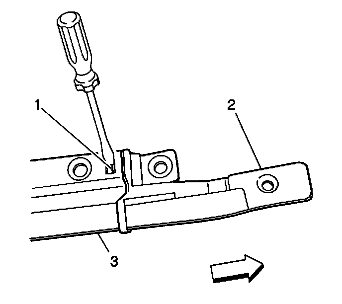

Sunroof Front Track Extension Replacement
Sunroof Front Track Extension Replacement
Removal Procedure
1. Move the front sunroof window to the full open position.
2. It is only necessary to lower the headliner. Only do those step in headliner replacement that will lower the headliner enough to gain access to the part. Refer to Headlining Trim Panel Replacement (Service and Repair) .
3. Remove the screws from the front track extension.
4. Loosen the 3 forwardmost screws from the front sunroof track.
5. Loosen the remaining track screws including the screw retaining the rear extension block to the sunroof cable drive tubes.

6. Flex the track downward in order to across the front extension track slot (1).
7. With a flat-bladed tool in the track slot (1), release the tab securing the front extension to the track (3)
8. Remove the front track extension (2).
Installation Procedure

1. Position the front track extension (4) to the track (1).
Important: Ensure that the release tab (2) is secure to the track (1).
2. Ensure that the front track is parallel to the opposite side track prior to securing the screws.
Notice: Refer to Fastener Notice (Fastener Notice) .
3. Loosely install the 3 forwardmost screws to the front sunroof track.
Tighten the screws to 5 N.m (44 lb in).
4. Install the screws to the front track extension.
Tighten the screws to 5 N.m (44 lb in).
5. Install the headliner. Refer to Headlining Trim Panel Replacement (Service and Repair) .
6. Close the front sunroof window.